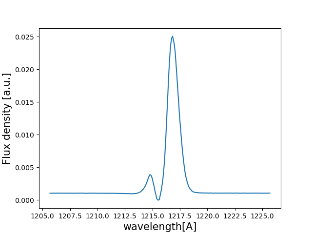
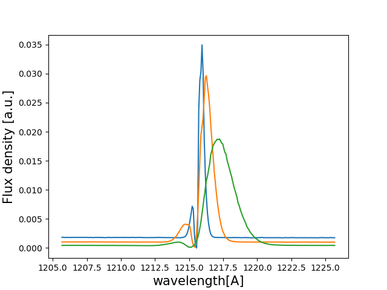

Tutorial : Computing ideal line profiles¶
In this tutorial you will, hopefully, learn how to compute ideal line Lyman-alpha line profiles with zELDA. The lines computed in this turorial are ideal becase they don’t suffer from the tipical artifacts casued by the fact the instruments are not perfect. These lines are in the rest frame of the galaxy.
Computing one ideal line profile¶
Let’s start by loading zELDA and setting the location of the LyaRT grids:
>>> import Lya_zelda as Lya
>>> your_grids_location = '/This/Folder/Contains/The/Grids/'
>>> Lya.funcs.Data_location = your_grids_location
where /This/Folder/Contains/The/Grids/ is the place where you store the LyaRT data grids, as shown in the installation section.
Now, let’s decide which outflow geometry we want to use. For this tutorial we will use the gas geometry known as Thin Shell in which the instrinsic continum is a gaussian and a continuum with a give equivalent width.
>>> Geometry = 'Thin_Shell_Cont'
Let’s load the data containing the grid:
>>> LyaRT_Grid = Lya.load_Grid_Line( Geometry )
This contains all the necessary information to compute the line profiles. To learn more about the grids of line profiles go to Installation .
Now let’s define the parameters of the shell model that we want. these are five:
>>> V_Value = 50.0 # Outflow expansion velocity [km/s]
>>> logNH_Value = 20. # Logarithmic of the neutral hydrogen column density [cm**-2]
>>> ta_Value = 0.01 # Dust optical depth
>>> logEW_Value = 1.5 # Logarithmic the intrinsic equivalent width [A]
>>> Wi_Value = 0.5 # Intrinsic width of the line [A]
Now, let’s set the wavlength array where we want to put the line in the international system of units (meters). We arbitraly chose to evaluate the line +-10A around Lyman-alpha:
>>> import numpy as np
>>> w_Lya = 1215.68 # Lyman-alpha wavelength in amstrongs
>>> np.linspace( w_Lya-10 , w_Lya+10 , 1000 ) * 1e-10
Now he have verything, let’s compute the line simply by doing:
>>> Line_Arr = Lya.RT_Line_Profile_MCMC( Geometry , wavelength_Arr , V_Value , logNH_Value , ta_Value , LyaRT_Grid , logEW_Value=logEW_Value , Wi_Value=Wi_Value )
And… It’s done! Line_Arr is a numpy array that contains the line profile evaluated in wavelength_Arr.
Let’s plot the line by doing
>>> import pylab as plt
>>> plt.plot( wavelength_Arr *1e10 , Line_Arr )
>>> plt.xlabel('wavelength[A]' , size=15 )
>>> plt.ylabel('Flux density [a.u.]' , size=15 )
>>> plt.show()
This should show something like this
{kind=link}
Computing many ideal line profile¶
Above we have just seen how to compute one ideal line profile. In the case that you want to compute several zELDA has a more compact function.
Let’s start like in the case above in which we set the location of the grids:
>>> import Lya_zelda as Lya
>>> your_grids_location = '/This/Folder/Contains/The/Grids/'
>>> Lya.funcs.Data_location = your_grids_location
where /This/Folder/Contains/The/Grids/ is the place where you store the LyaRT data grids, as shown in the installation section.
Now, let’s set the geometry:
>>> Geometry = 'Thin_Shell_Cont'
And now, instead of loading the grid, let’s define the outflow parameters. In this case they will be lists (or numpy arrays) as we want, for example 3 line profile configurations:
>>> V_Arr = [ 50.0 , 100. , 200. ] # Outflow expansion velocity [km/s]
>>> logNH_Arr = [ 18. , 19. , 20. ] # Logarithmic of the neutral hydrogen column density [cm**-2]
>>> ta_Arr = [ 0.1 , 0.01 , 0.001 ] # Dust optical depth
>>> logEW_Arr = [ 1. , 1.5 , 2.0 ] # Logarithmic the intrinsic equivalent width [A]
>>> Wi_Arr = [ 0.1 , 0.5 , 1.0 ] # Intrinsic width of the line [A]
and the wavelength array
>>> import numpy as np
>>> w_Lya = 1215.68 # Lyman-alpha wavelength in amstrongs
>>> np.linspace( w_Lya-10 , w_Lya+10 , 1000 ) * 1e-10
Now let’s actually compute the lines:
>>> Line_Matrix = Lya.RT_Line_Profile( Geometry , wavelength_Arr , V_Arr , logNH_Arr , ta_Arr , logEW_Arr=logEW_Arr , Wi_Arr=Wi_Arr )
Line_Matrix is a 2-D numpy array containing the line profiles for teh configurations. For example, Line_Matrix[0] has outflow velocity V_Arr[0], neutral hydrogen column density logNH_Arr[0] and so on.
Let’s plot them:
>>> import pylab as plt
>>>
>>> for i in range( 0 , 3 ) :
>>>
>>> plt.plot( wavelength_Arr *1e10 , Line_Matrix[i] )
>>>
>>> plt.xlabel('wavelength[A]' , size=15 )
>>> plt.ylabel('Flux density [a.u.]' , size=15 )
>>>
>>> plt.show()
This should show something like this:
{kind=link}
Now you know how to get ideal Lyman-alpha line profiles!